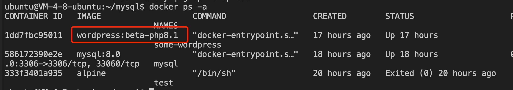
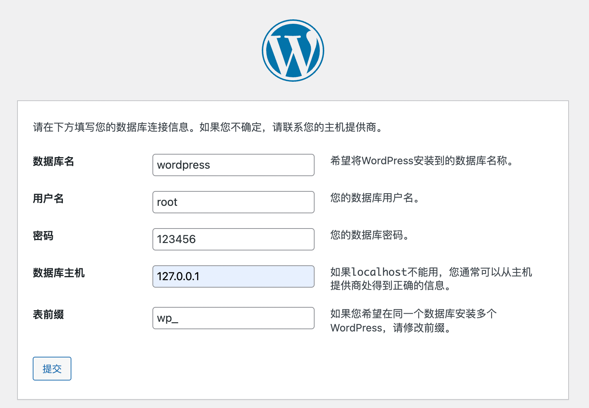
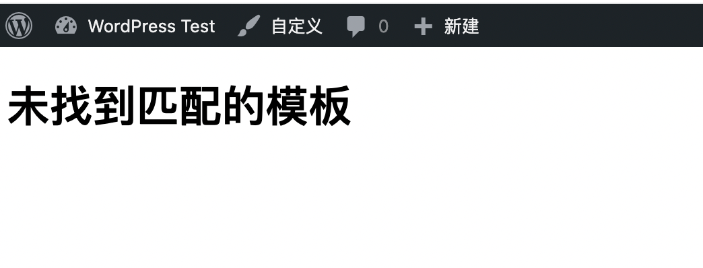
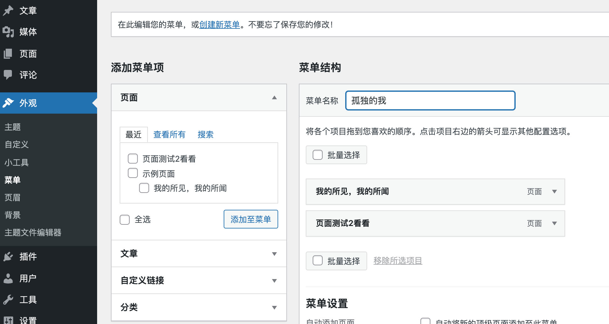

[toc]
为什么要搭建一个wordpress站点
想写博客了，记录自己技术上的成长(😊)。wordpress是一个动态站点（对比github加hexo搭建的）。wordpress服务器搭建的网站，优点在于互动很容易比如评论，页面设计比较自由等。但是缺点是需要自己配置数据库存数据，而且很多配置文件并不是存到数据库中的，移植性很差。文章格式并不是原生支持markdown格式，需要装插件。最终选择了使用hexo加github那一套，毕竟文章笔记都是md格式文件，移植性高，配置和环境文件还有github兜底，不至于后面会出现丢数据情况。
如何搭建一个wordpress
准备工作
- wordpress的docker镜像
- mysql8.0的docker镜像
docker查看当前拥有的镜像
1 | docker images |
镜像的运行
前置事项: 需要创建属于mysql自己的配置文件(因为挂载了目录的缘故吧)
在mysql目录下创建一个my.cnf文件，内容如下:
1 | [mysqld] |
首先我们的服务器上要安装mysql8.0
1 | docker run \ |
这里需要注意的事:
- –restart: 选项是当mysql运行停止后，自动重启的选项
- –p: 端口映射，本机端口:docker镜像端口
- –name: 运行的容器名字
- -v: 目录挂载(很重要)，将mysql的数据在本地保存一份
- -e: 设置环境变量，该命令是为了产生一个mysql的root用户，密码是123456
- -d: 后台运行
运行mysql容器成功:
通过ps命令查看
1 | docker ps -a |
wordpress容器的启动
1 | docker run --name some-wordpress --network=host -d wordpress:beta-php8.1 |
注意
- 选用–network=host 保证wordpress与主机网络环境一致
- –network = host 可以避免容器之间通信的麻烦，比如wordpress需要访问mysql8.0的容器
启动成功
wordpress登录
使用默认端口80登录

为了复用原先mysql数据库的表(wordpress的网页代码都是存到表里面的)
我们需要使用同一个表名
由于使用了别的模版
wordpress无法解析，因此需要重新去下载主题和插件(所以这里我认为，模版主题和插件是存在容器中的，当删除重启，这些插件都需要重新下载)

重新安装回mynote主题
WordPress的使用
插件相关
- WP Githuber MD – WordPress Markdown 语法编辑器: 使用markdown写网页
菜单相关
 通过菜单将新增的页面添加进去，将在菜单上增加导航小工具相关
该功能相当于布局整个页面模块